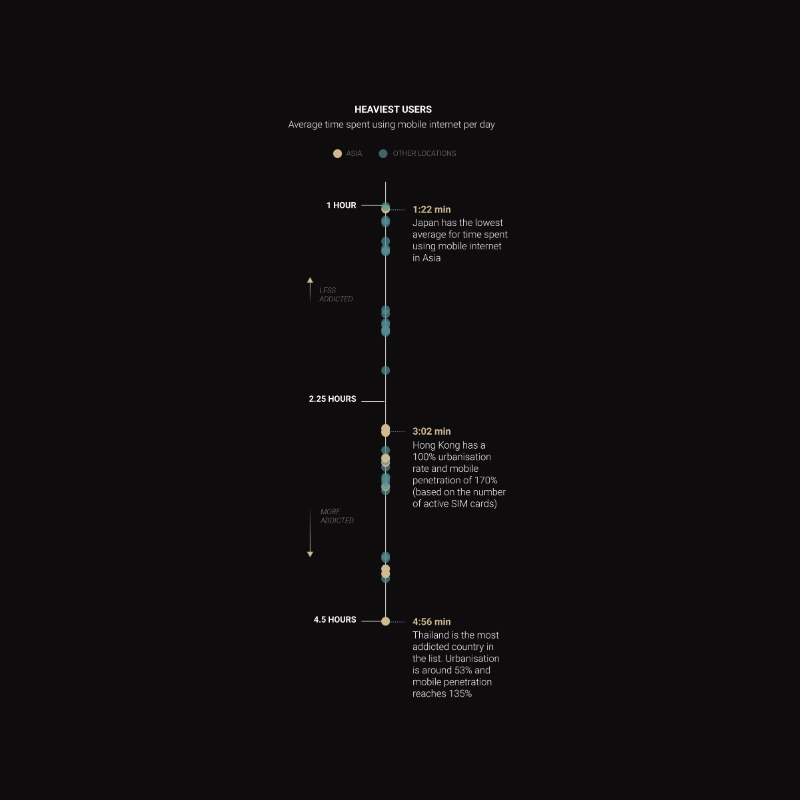
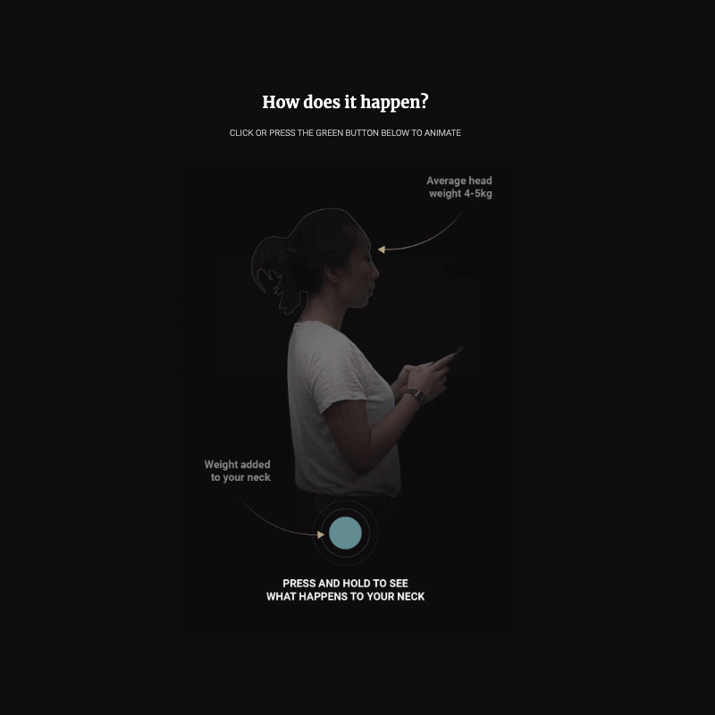
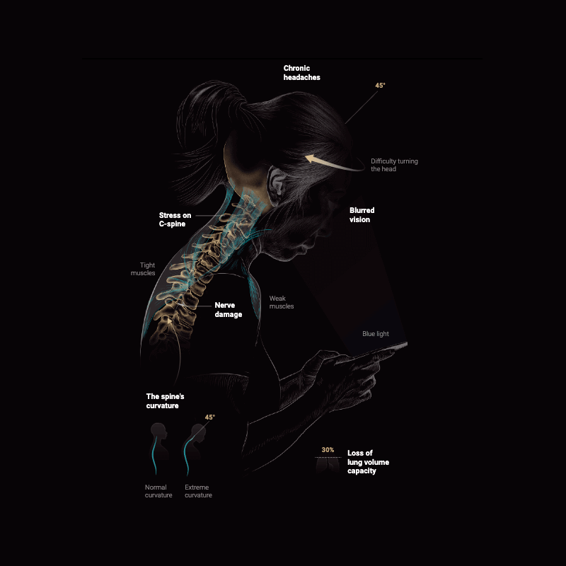
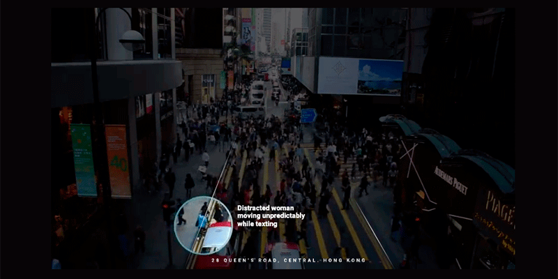

INFOGRAFÍA IMPRESA
En esta infografía, además de título, crédito, bajada, fuentes y un vínculo a la versión digital, es posible distinguir 2 gráficos grandes y 2 grupos de gráficos más pequeños; un grupo de gráficos complementan la relación entre el cuerpo y el uso excesivo del smartphone, y otro grupo se refiere al riesgo de accidentes por caminar "pegado" a la pantalla.
Un primer gráfico grande, que es un gráfico no-figurativo, presenta los distintos tiempos promedio que dedican las personas al uso de Internet móvil. Puede notarse que las líneas usan dos colores; amarillo para los países asiáticos y cian para otras localidades.
El segundo gráfico grande, que es uno mixto, nos muestra cómo aumenta el peso de la cabeza con el ángulo de inclinación forzado en la interacción con la pantalla de smartphone. Es importante aclarar que se trata de un gráfico mixto porque es entrega su información a través de (1) una ilustración que re-presenta a una mujer con su smartphone junto con (2) un gráfico que presenta el aumento del peso promedio de la cabeza mediante el aumento del radio de un círculo.
El grupo de gráficos más pequeños que complementa lo del dolor de cuello, nos enseña sobre otras complicaciones, entre las que se puede incluir hasta el compromiso de la capacidad de los pulmones. Conviene apuntar que entre estos gráficos pequeños hay uno que trata de otro asunto (el primero de ellos).

El segundo grupo de gráficos más pequeños nos enseñan de los efectos de ir "pegados" al smartphone. Esto implica ir más allá del daño que pueda hacer el aumento de la carga de nuestra cabeza en el ángulo de inclinación. Implica referir al riesgo de accidente implicado en creer que podemos atender, a la vez, al smartphone y al caminar.
INFOGRAFÍA DIGITAL
El primero de los grandes gráficos que llama la atención en la versión impresa pierde toda relevancia en la digital: Se ubica prácticamente al final del scroll, y ofrece menos datos que el impreso (sólo menciona a tres localidades asiáticas, omitiendo detalles de todas las demás).
El segundo gráfico grande se replantea, haciéndose interactivo. Ya no es una ilustración, es un fotografía. Y al mantener presionado un botón esta infografía se convierte en un video que muestra el incremento de ángulo y peso de la cabeza.
La información del grupo de gráficos pequeños que refieren a los efectos del uso permanente del smartphone se funde en una única gráfica.
Se agrega material auodiovisual que muestra los riesgos asociados al uso de smartphone mientras uno de desplaza.
¿Cómo podrían justificarse todas las modificaciones? ¿Se trata de una simple adaptación de datos de un sustrato a otro? Convendría pensar en una reestructuración completa del trabajo infográfico, que se hace atiendiendo a los usos y costumbres asociadas a cada medio?